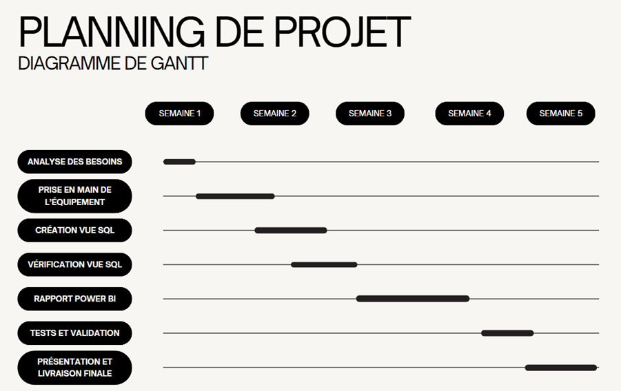
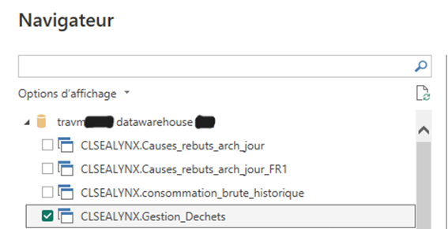

Projet
Power BI.
Description du Projet de stage
Création d'un Power BI sur les flux de déchets.
Créer un Dashboard Power BI pour quantifier et visualiser les flux de déchets en s’appuyant sur les différentes tables disponibles de l’entrepôt de données (Datawarehouse). Le suivi concernera les types de déchets suivants : Métaux / Déchet de boudinage / Déchet technique / Déchet produit fini / Caoutchouc déclassé
SQLserver
Transact-SQL
Power BI
Talend Open Studio
Travail réalisé
Planifier les activités :
Déployer le service / normes :
Page finale :

Compétences Validées
-
B1.1 Gérer le patrimoine informatique
Exploiter des références, normes et standards. -
B1.4 Travailler en mode projet
Planifier les activités
Évaluer les indicateurs de suivi d’un projet et analyser les écarts -
B1.5 Mettre à disposition des utilisateurs un service informatique
Déployer un service
Accompagner les utilisateurs dans la mise en place d’un service